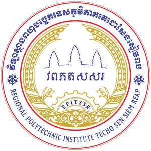

វេទិកាសិក្សាឌីជីថល • ៥ ជំពូក • ១៨ មេរៀន & ឧបសម្ព័ន្ធ
ការរចនាក្រាហ្វិក
និងកាត់តរូបភាព
Basic Adobe Photoshop 2022
Photoshop 2022
Graphic Design
Photo Retouching
វិទ្យាស្ថានពហុបច្ចេកទេសភូមិភាគតេជោសែនសៀមរាប
(RPITSSR)
